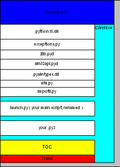

PyInstaller Manual
| Version: | PyInstaller 2.0 |
|---|---|
| Homepage: | http://www.pyinstaller.org |
| Author: | Giovanni Bajo & William Caban (based on Gordon McMillan's manual) |
| Contact: | rasky@develer.com |
| Revision: | $Rev$ |
| Source URL: | $HeadURL$ |
| Copyright: | This document has been placed in the public domain. |
Contents
- Requirements
- Installing PyInstaller
- Getting Started
- PyInstaller Utilities
- Spec Files
- When Things Go Wrong
- Miscellaneous
- PyInstaller Archives
- License
- Appendix
Requirements
- Windows
- Windows XP or newer.
- PyWin32 Python extensions for Windows is only necessary for users of Python 2.6+.
- Linux
- ldd - Console application to print the shared libraries required by each program or shared library.
- objdump - Console application to display information from object files.
- Mac OS X
- Mac OS X 10.4 (Tiger) or newer (Leopard, Snow Leopard, Lion, Mountain Lion).
- Solaris
- ldd
- objdump
- AIX
- AIX 6.1 or newer. Python executables created using PyInstaller on AIX 6.1 should work on AIX 5.2/5.3. PyInstaller will not work with statically linked Python libraries which has been encountered in Python 2.2 installations on AIX 5.x.
- ldd
- objdump
Installing PyInstaller
Unpack the archive on you path of choice. For the purpose of this documentation we will assume /your/path/to/pyinstaller/.
You will be using a couple of scripts in the /your/path/to/pyinstaller/ directory, and these will find everything they need from their own location. For convenience, keep the paths to these scripts short (don't install in a deeply nested subdirectory).
Please note: Installer is not a Python package, so it doesn't need to go in site-packages, or have a .pth file.
For Windows (32/64bit), Linux (32/64bit) and Mac OS X (32/64bit) precompiled boot-loaders are available. So the installation is complete now.
For other platforms (Solaris, AIX, etc.), users should first try to build the boot-loader:
cd source python ./waf configure build install
Getting Started
For the purpose of this documentation we will assume PyInstaller as installed into /your/path/to/pyinstaller/.
Build your project
For building a Windows COM server, please see section Windows COM Server Support below.
In the /your/path/to/pyinstaller/ directory, run:
python pyinstaller.py [opts] yourprogram.py
This will create a sub-directory your-program in the /your/path/to/pyinstaller/ directory. The generated files will be placed within the sub-directory your-program/dist; that's where the files you are interested in will be placed. A spec file called your-program.spec will be created in the sub-directory your-program, too. Additionally a subtracts your-program/build is created where intermediate build files are kept.
If your current working directory is not /your/path/to/pyinstaller/, the directories dist and build and the spec file will be created in the current working directory. Say: the intermediate directory your-program will be skipped.
If you have already created a spec file for your project then in the /your/path/to/pyinstaller/ directory run:
python pyinstaller.py [opts] your-program.spec
If your current working directory is not /your/path/to/pyinstaller/, this works analogously.
If everything is working and you are happy with the default settings, this will be all you have to do. If not, see Allowed OPTIONS, When things go wrong and be sure to read the introduction to Spec Files.
Allowed Options
By default, pyinstaller.py creates a distribution directory containing the main executable and the dynamic libraries. The option --onefile (specifies that you want PyInstaller to build a single file with everything inside.
The syntax to use pyinstaller.py is the following:
python pyinstaller.py [opts] <scriptname> [ <scriptname> ...] | <specfile>
Allowed OPTIONS are:
| -h, --help | show this help message and exit |
| -v, --version | show program version |
| --upx-dir=UPX_DIR | |
| Directory containing UPX. | |
| -a, --ascii | do NOT include unicode encodings (default: included if available) |
| --buildpath=BUILDPATH | |
| Buildpath (default: SPECPATH/build/pyi.TARGET_PLATFORM/SPECNAME) | |
| -y, --noconfirm | |
| Remove output directory (default: SPECPATH/dist/SPECNAME) without confirmation | |
| --log-level=LOGLEVEL | |
| Log level (default: INFO, choose one of DEBUG, INFO, WARN, ERROR, CRITICAL) | |
What to generate:
| -F, --onefile | create a single file deployment |
| -D, --onedir | create a single directory deployment (default) |
| -o DIR, --out=DIR | |
| create the spec file in directory. If not specified, and the current directory is Installer's root directory, an output subdirectory will be created. Otherwise the current directory is used. | |
| -n NAME, --name=NAME | |
| optional name to assign to the project (from which the spec file name is generated). If omitted, the basename of the (first) script is used. | |
What to bundle, where to search:
| -p DIR, --paths=DIR | |
| set base path for import (like using PYTHONPATH). Multiple directories are allowed, separating them with the path separator (';' under Windows, ':' under Linux), or using this option multiple times. | |
| --hidden-import=MODULENAME | |
| import hidden in the script(s). This option can be used multiple times. | |
| --additional-hooks-dir=HOOKSPATH | |
| Additional path to search for hooks. This will go into the extend the hookspath, see Analysis below. This option may be given several times. | |
How to generate:
| -d, --debug | use the debug (verbose) build of the executable |
| -s, --strip | the executable and all shared libraries will be run through strip. Note that cygwin's strip tends to render normal Win32 dlls unusable. |
| --noupx | do not use UPX even if available (works differently between Windows and *nix) |
Windows and Mac OS X specific options:
| -c, --console, --nowindowed | |
| use a console subsystem executable (default) | |
| -w, --windowed, --noconsole | |
| use a windowed subsystem executable, which on Windows does not open the console when the program is launched. On Mac OS X it allows running gui applications and also creates also .app bundle. This option is mandatory when freezing an gui application on Mac OS X. Otherwise the application will not start.. | |
- -i FILE.ICO, -i FILE.EXE,ID, -i FILE.ICNS, --icon=FILE.ICO, --icon=FILE.EXE,ID, --icon=FILE.ICNS
- If FILE is an .ico file, add the icon to the final executable. Otherwise, the syntax 'file.exe,id' to extract the icon with the specified id from file.exe and add it to the final executable. If FILE is an .icns file, add the icon to the final .app bundle on Mac OS X (for Mac not yet implemented)
Windows specific options:
| --version-file=FILE | |
| add a version resource from FILE to the exe | |
| -m FILE, -m XML, --manifest=FILE, --manifest=XML | |
| add manifest FILE or XML to the exe | |
- -r FILE[,TYPE[,NAME[,LANGUAGE]]], --resource=FILE[,TYPE[,NAME[,LANGUAGE]]]
- add/update resource of the given type, name and language from FILE to the final executable. FILE can be a data file or an exe/dll. For data files, atleast TYPE and NAME need to be specified, LANGUAGE defaults to 0 or may be specified as wildcard * to update all resources of the given TYPE and NAME. For exe/dll files, all resources from FILE will be added/updated to the final executable if TYPE, NAME and LANGUAGE are omitted or specified as wildcard *.Multiple resources are allowed, using this option multiple times.
For building with optimization on (like Python -O), see section Building Optimized.
A spec file for your project
The spec file is the description of what you want PyInstaller to do with your program. By deafult, pyinstaller.py generates a spec file automatically. For simple projects, the generated spec file will be probably sufficient.
For more complex projects, it should be regarded as a template. The spec file is actually Python code, and modifying it should be ease. See Spec Files for details.
In the root directory of PyInstaller, there is a simple wizard to create simple spec files that cover all basic usages:
python utils/Makespec.py [--onefile] yourprogram.py
Elaborating on Makespec.py, this is the supported command line:
python utils/Makespec.py [opts] <scriptname> [<scriptname> ...]
Script Makespec.py shares some options with pyinstaller.py. For allowed options see:
python utils/Makespec.py --help
Windows COM Server support
For Windows COM support execute:
python MakeComServer.py [OPTION] script...
This will generate a new script drivescript.py and a spec file for the script.
These options are allowed:
| --debug | Use the verbose version of the executable. |
| --verbose | Register the COM server(s) with the quiet flag off. |
| --ascii | do not include encodings (this is passed through to Makespec). |
| --out <dir> | Generate the driver script and spec file in dir. |
Now Build your project on the generated spec file.
If you have the win32dbg package installed, you can use it with the generated COM server. In the driver script, set debug=1 in the registration line.
Warnings: the inprocess COM server support will not work when the client process already has Python loaded. It would be rather tricky to non-obtrusively hook into an already running Python, but the show-stopper is that the Python/C API won't let us find out which interpreter instance I should hook into. (If this is important to you, you might experiment with using apartment threading, which seems the best possibility to get this to work). To use a "frozen" COM server from a Python process, you'll have to load it as an exe:
o = win32com.client.Dispatch(progid,
clsctx=pythoncom.CLSCTX_LOCAL_SERVER)
MakeCOMServer also assumes that your top level code (registration etc.) is "normal". If it's not, you will have to edit the generated script.
Building Optimized
There are two facets to running optimized: gathering .pyo's, and setting the Py_OptimizeFlag. Installer will gather .pyo's if it is run optimized:
python -O pyinstaller.py ...
The Py_OptimizeFlag will be set if you use a ('O','','OPTION') in one of the TOCs building the EXE:
exe = EXE(pyz,
a.scripts + [('O','','OPTION')],
...
See Spec Files for details.
A Note on using UPX
On both Windows and Linux, UPX can give truly startling compression - the days of fitting something useful on a diskette are not gone forever! Installer has been tested with many UPX versions without problems. Just get it and install it on your PATH.
For Windows, there is a problem of compatibility between UPX and executables generated by Microsoft Visual Studio .NET 2003 (or the equivalent free toolkit available for download). This is especially worrisome for users of Python 2.4+, where most extensions (and Python itself) are compiled with that compiler. This issue has been fixed in later beta versions of UPX, so you will need at least UPX 1.92 beta. pyinstaller.py will check this for you and complain if you have an older version of UPX and you are using Python 2.4.
For Linux, a bit more discussion is in order. First, UPX is only useful on executables, not shared libs. Installer accounts for that, but to get the full benefit, you might rebuild Python with more things statically linked.
More importantly, when run finds that its sys.argv[0] does not contain a path, it will use /proc/pid/exe to find itself (if it can). This happens, for example, when executed by Apache. If it has been upx-ed, this symbolic link points to the tempfile created by the upx stub and PyInstaller will fail (please see the UPX docs for more information). So for now, at least, you can't use upx for CGI's executed by Apache. Otherwise, you can ignore the warnings in the UPX docs, since what PyInstaller opens is the executable Installer created, not the temporary upx-created executable.
Accessing Data Files
If your application needs to access data files, e.g configuration files or icons images, you need some minor changes to you application and you need to collect the file into distribution directory tree (in --onedir mode) resp. into the executable (in --onefile mode).
Adopt your application
Instead of:
basedir = os.path.dirname(__file__)
use:
if getattr(sys, 'frozen', None):
basedir = sys._MEIPASS
else:
basedir = os.path.dirname(__file__)
sys._MEIPASS points in --onedir mode to the directory containing the created executable and in --onefile mode to the temporary directory where binaries get extracted.
Collect your data files
Collecting the data-files is easy: pass a list of your data files (in TOC format) to the COLLECT. The name in the (name, path, 'DATA') tuple can be a relative path name.
Then, at runtime, you can use code like this to find the file:
os.path.join(basedir, relativename)
In a --onedir distribution, the files will listed in the COLLECT will show up in the distribution directory tree, so you can simply pack them into your isntaller or distribution archive.
In a --onefile distribution, data files are bundled within the executable and then at runtime extracted into the work directory. This is done by the C code which is also able to reconstruct directory trees.
How one-file mode works
A --onefile works by packing all the shared libs / dlls into the archive attached to the bootloader executable (or next to the executable in a non-elf configuration). When first started, it finds that it needs to extract these files before it can run "for real". That's because locating and loading a shared lib or linked-in dll is a system level action, not user-level. With PyInstaller 2.0 it always uses a temporary directory (_MEIXXXXX, where XXXXX is a random number to avoid conflicts) in the user's temp directory. It then executes itself again, setting things up so the system will be able to load the shared libs / dlls. When execution is complete, it recursively removes the entire directory it created.
The temporary directory is exported to the program's environment as sys._MEIPASS. This can be used in case you manually modified the spec file to tell PyInstaller to add additional files (eg: data files) within the executable (see also Accessing Data Files).
This has a number of implications:
- You can run multiple copies - they won't collide.
- Running multiple copies will be rather expensive to the system (nothing is shared).
- On Windows, using Task Manager to kill the parent process will leave the directory behind.
- On *nix, a kill -9 (or crash) will leave the directory behind.
- Otherwise, on both platforms, the directory will be recursively deleted.
- So any files you might create in sys._MEIPASS will be deleted.
- The executable can be in a protected or read-only directory.
Notes for *nix users: Take notice that if the executable does a setuid root, a determined hacker could possibly (given enough tries) introduce a malicious lookalike of one of the shared libraries during the hole between when the library is extracted into the temporary directory and when it gets loaded by the execvp'd process. So maybe you shouldn't do setuid root programs using --onefile. In fact, we do not recomend the use of --onefile on setuid programs.
.egg files and setuptools
setuptools is a distutils extensions which provide many benefits, including the ability to distribute the extension as eggs. Together with the nifty easy_install (a tool which automatically locates, downloads and installs Python extensions), eggs are becoming more and more widespread as a way for distributing Python extensions.
eggs can be either files or directories. An egg directory is basically a standard Python package, with some additional metadata that can be used for advanced setuptools features like entry-points. An egg file is simply a ZIP file, and it works as a package as well because Python 2.3+ is able to transparently import modules stored within ZIP files.
PyInstaller supports eggs at a good level. In fact:
- It is able to follow dependencies within eggs (both files and directories). So if your program imports a package shipped in egg format, and this package requires additional libraries, PyInstaller will correctly include everything within the generated executable.
- egg-files are fully supported. To let everything works (entry-points, pkg_resource library, etc.), PyInstaller either copy the egg-files into the distribution directory (in one-dir mode) or packs them as-is within the generated executable and unpack them at startup into the temporary directory (see How one-file mode works).
- egg-directories are partially supported. In fact, PyInstaller at build time treat them as regular package. This means that all advanced features requiring egg metadatas will not work.
Improved support for eggs is planned for a future release of PyInstaller.
Multipackage function
Some applications are made of several different binaries, that might rely on the same third-party libraries and/or share lots of code. When packaging such applications, it would be a pity to treat each application binary separately and repackage all its dependencies, potentially duplicating lots of code and libraries.
With Pyinstaller, you can use the multipackage feature to create multiple binaries that might share libraries among themselves: each dependency is packaged only once in one of the binaries, while the others simply have an "external reference" to it, that tells them to go finding that dependency in the binary contains it.
The easiest way to access this function is to simply pass multiple script files to pyinstaller.py (or utils/Makespec.py`). It will generate a spec file that contains a call to the MERGE function to basically merge dependencies across the different scripts.
The order of the scripts on the command line (and within the MERGE function) matters: given each library, PyInstaller will package common dependencies on the leftmost script that first needs that dependency. You might want to tweak the order of the script files accordingly.
Notice that the external references between binaries are hard-coded with respect to the paths on the disk in which they are created in the output directory, and cannot be rearranged: thus, if you use a one-file deploy, you will need to place all binaries in the same directory when you install your application. Similarly, if you use one-dir deploy, you will need to install all the binary directories within the same parent directory.
There are multipackage examples in the buildtests/multipackage directory.
PyInstaller Utilities
ArchiveViewer
python utils/ArchiveViewer.py <archivefile>
ArchiveViewer lets you examine the contents of any archive build with PyInstaller or executable (PYZ, PKG or exe). Invoke it with the target as the first arg (It has been set up as a Send-To so it shows on the context menu in Explorer). The archive can be navigated using these commands:
- O <nm>
- Open the embedded archive <nm> (will prompt if omitted).
- U
- Go up one level (go back to viewing the embedding archive).
- X <nm>
- Extract nm (will prompt if omitted). Prompts for output filename. If none given, extracted to stdout.
- Q
- Quit.
Futhermore ArchiveViewer has some simple console commands:
| -h, --help | Show help. |
| -l, --log | Quick contents log. |
| -b, --brief | Print a python evaluable list of contents filenames. |
| -r, --recursive | |
| Used with -l or -b, applies recusive behaviour. | |
BinDepend
python utils/BinDepend.py <executable_or_dynamic_library>
BinDepend will analyze the executable you pass to it, and write to stdout all its binary dependencies. This is handy to find out which DLLs are required by an executable or another DLL. This module is used by PyInstaller itself to follow the chain of dependencies of binary extensions and make sure that all of them get included in the final package.
GrabVersion (Windows)
python utils/GrabVersion.py <executable_with_version_resource>
GrabVersion outputs text which can be eval'ed by versionInfo.py to reproduce a version resource. Invoke it with the full path name of a Windows executable (with a version resource) as the first argument. If you cut & paste (or redirect to a file), you can then edit the version information. The edited text file can be used in a version = myversion.txt option on any executable in an PyInstaller spec file.
This was done in this way because version resources are rather strange beasts, and fully understanding them is probably impossible. Some elements are optional, others required, but you could spend unbounded amounts of time figuring this out, because it's not well documented. When you view the version tab on a properties dialog, there's no straightforward relationship between how the data is displayed and the structure of the resource itself. So the easiest thing to do is find an executable that displays the kind of information you want, grab it's resource and edit it. Certainly easier than the Version resource wizard in VC++.
Analyzing Dependencies
You can interactively track down dependencies, including getting cross-references by using mf.py, documented in section mf.py: A modulefinder Replacement
Spec Files
Introduction
When you run utils/Makespec.py (documented in section A spec file for your project), it generates a spec file for you. In fact, you can think of utils/Makespec.py just like a wizard that lets you generate a standard spec file for most standard usages. But advanced users can learn to edit spec files to fully customize PyInstaller behaviour to their needs, giving beyond the standard settings provided by the wizard.
Spec files are in Python syntax. They are evaluated by pyinstaller.py. A simplistic spec file might look like this:
a = Analysis(['myscript.py']) pyz = PYZ(a.pure) exe = EXE(pyz, a.scripts, a.binaries, name="myapp.exe")
This creates a single file deployment with all binaries (extension modules and their dependencies) packed into the executable.
A simplistic single directory deployment might look like this:
a = Analysis(['myscript.py']) pyz = PYZ(a.pure) exe = EXE(a.scripts, pyz, name="myapp.exe", exclude_binaries=1) dist = COLLECT(exe, a.binaries, name="dist")
Note that neither of these examples are realistic. If you want to start hacking a spec file, use utils/Makespec.py to create a basic specfile, and tweak it (if necessary) from there.
All of the classes you see above are subclasses of Build.Target. A Target acts like a rule in a makefile. It knows enough to cache its last inputs and outputs. If its inputs haven't changed, it can assume its outputs wouldn't change on recomputation. So a spec file acts much like a makefile, only rebuilding as much as needs rebuilding. This means, for example, that if you change an EXE from debug=1 to debug=0, the rebuild will be nearly instantaneous.
The high level view is that an Analysis takes a list of scripts as input, and generates three "outputs", held in attributes named scripts, pure and binaries. A PYZ (a .pyz archive) is built from the modules in pure. The EXE is built from the PYZ, the scripts and, in the case of a single-file deployment, the binaries. In a single-directory deployment, a directory is built containing a slim executable and the binaries.
TOC Class (Table of Contents)
Before you can do much with a spec file, you need to understand the TOC (Table Of Contents) class.
A TOC appears to be a list of tuples of the form (name, path, typecode). In fact, it's an ordered set, not a list. A TOC contains no duplicates, where uniqueness is based on name only. Furthermore, within this constraint, a TOC preserves order.
Besides the normal list methods and operations, TOC supports taking differences and intersections (and note that adding or extending is really equivalent to union). Furthermore, the operations can take a real list of tuples on the right hand side. This makes excluding modules quite easy. For a pure Python module:
pyz = PYZ(a.pure - [('badmodule', '', '')])
or for an extension module in a single-directory deployment:
dist = COLLECT(..., a.binaries - [('badmodule', '', '')], ...)
or for a single-file deployment:
exe = EXE(..., a.binaries - [('badmodule', '', '')], ...)
To add files to a TOC, you need to know about the typecodes (or the step using the TOC won't know what to do with the entry).
| typecode | description | name | path |
|---|---|---|---|
| 'EXTENSION' | An extension module. | Python internal name. | Full path name in build. |
| 'PYSOURCE' | A script. | Python internal name. | Full path name in build. |
| 'PYMODULE' | A pure Python module (including __init__ modules). | Python internal name. | Full path name in build. |
| 'PYZ' | A .pyz archive (archive_rt.ZlibArchive). | Runtime name. | Full path name in build. |
| 'PKG' | A pkg archive (carchive4.CArchive). | Runtime name. | Full path name in build. |
| 'BINARY' | A shared library. | Runtime name. | Full path name in build. |
| 'DATA' | Aribitrary files. | Runtime name. | Full path name in build. |
| 'OPTION' | A runtime runtime option (frozen into the executable). | The option. | Unused. |
You can force the include of any file in much the same way you do excludes:
collect = COLLECT(a.binaries +
[('readme', '/my/project/readme', 'DATA')], ...)
or even:
collect = COLLECT(a.binaries,
[('readme', '/my/project/readme', 'DATA')], ...)
(that is, you can use a list of tuples in place of a TOC in most cases).
There's not much reason to use this technique for PYSOURCE, since an Analysis takes a list of scripts as input. For PYMODULEs and EXTENSIONs, the hook mechanism discussed here is better because you won't have to remember how you got it working next time.
This technique is most useful for data files (see the Tree class below for a way to build a TOC from a directory tree), and for runtime options. The options the run executables understand are:
| Option | Description | Example | Notes |
|---|---|---|---|
| v | Verbose imports | ('v', '', 'OPTION') | Same as Python -v ... |
| u | Unbuffered stdio | ('u', '', 'OPTION') | Same as Python -u ... |
| W spec | Warning option | ('W ignore', '', 'OPTION') | Python 2.1+ only. |
| s | Use site.py | ('s', '', 'OPTION') | The opposite of Python's -S flag. Note that site.py must be in the executable's directory to be used. |
Advanced users should note that by using set differences and intersections, it becomes possible to factor out common modules, and deploy a project containing multiple executables with minimal redundancy. You'll need some top level code in each executable to mount the common PYZ.
Target Subclasses
Analysis
Analysis(scripts, pathex=None, hookspath=None, excludes=None)
- scripts
- a list of scripts specified as file names.
- pathex
- an optional list of paths to be searched before sys.path.
- hiddenimports
- an optional list of additional (hidden) modules to include. Please refer to Listing Hidden Imports for details.
- hookspath
- an optional list of additional paths to search for hooks (hook-modules). Please refer to Listing Hidden Imports for details.
- excludes
- an optional list of module or package names (their Python names, not path names) that will be ignored (as though they were not found).
An Analysis has five outputs, all TOCs accessed as attributes of the Analysis.
- scripts
- The scripts you gave Analysis as input, with any runtime hook scripts prepended.
- pure
- The pure Python modules.
- binaries
- The extension modules and their dependencies. The secondary dependencies are filtered. On Windows, a long list of MS dlls are excluded. On Linux/Unix, any shared lib in /lib or /usr/lib is excluded.
- datas
- Data-file dependencies. These are data-file that are found to be needed by modules. They can be anything: plugins, font files, etc.
- zipfiles
- The zipfiles dependencies (usually egg-files).
PYZ
PYZ(toc, name=None, level=9)
- toc
- a TOC, normally an Analysis.pure.
- name
- A filename for the .pyz. Normally not needed, as the generated name will do fine.
- level
- The Zlib compression level to use. If 0, the zlib module is not required.
PKG
Generally, you will not need to create your own PKGs, as the EXE will do it for you. This is one way to include read-only data in a single-file deployment, however.
PKG(toc, name=None, cdict=None, exclude_binaries=0)
- toc
- a TOC.
- name
- a filename for the PKG (optional).
- cdict
- a dictionary that specifies compression by typecode. For example, PYZ is left uncompressed so that it can be accessed inside the PKG. The default uses sensible values. If zlib is not available, no compression is used.
- exclude_binaries
- If 1, EXTENSIONs and BINARYs will be left out of the PKG, and forwarded to its container (usually a COLLECT).
EXE
EXE(*args, **kws)
- args
- One or more arguments which are either TOCs or Targets.
- kws
Possible keyword arguments:
- console
- Always 1 on Linux/unix. On Windows, governs whether to use the console executable, or the Windows subsystem executable.
- debug
- Setting to 1 gives you progress messages from the executable (for a console=0, these will be annoying MessageBoxes).
- name
- The filename for the executable.
- exclude_binaries
- Forwarded to the PKG the EXE builds.
- icon
- Windows NT family only. icon='myicon.ico' to use an icon file, or icon='notepad.exe,0' to grab an icon resource.
- version
- Windows NT family only. version='myversion.txt'. Use GrabVersion.py to steal a version resource from an executable, and then edit the ouput to create your own. (The syntax of version resources is so arcane that I wouldn't attempt to write one from scratch.)
- append_pkg
- If True, then append the PKG archive to the EXE. If False, place the PKG archive in a separate file exename.pkg. The default depends on whether Make.py was given the -n argument when building the loader. The default is True on Windows. On non-ELF platforms where concatenating arbitrary data to an executable does not work, append_pkg must be set to False.
DLL
On Windows, this provides support for doing in-process COM servers. It is not generalized. However, embedders can follow the same model to build a special purpose DLL so the Python support in their app is hidden. You will need to write your own dll, but thanks to Allan Green for refactoring the C code and making that a managable task.
COLLECT
COLLECT(*args, **kws)
- args
- One or more arguments which are either TOCs or Targets.
- kws
Possible keyword arguments:
- name
- The name of the directory to be built.
Tree
Tree(root, prefix=None, excludes=None)
- root
- The root of the tree (on the build system).
- prefix
- Optional prefix to the names on the target system.
- excludes
A list of names to exclude. Two forms are allowed:
- name
- files with this basename will be excluded (do not include the path).
- *.ext
- any file with the given extension will be excluded.
Since a Tree is a TOC, you can also use the exclude technique described above in the section on TOCs.
MERGE
With the MERGE function we can create a group of interdependent packages.
MERGE(*args)
- *args
- This is a list of tuples. The first element of the tuple is an analysis object, the second one is the script name without extension and the third one is the final name.
The MERGE function filters the analysis to avoid duplication of libraries and modules. As a result the packages generated will be connected. Furthermore, to ensure the consistency of dependencies, it replaces the temporary names with the actual names. MERGE is used after the analysis phase and before EXE and COLLECT.
Here is spec file example with MERGE function:
## Where the package folders will be built, and the shortcuts will reside
TargetDir = os.path.abspath(os.path.join('..','..','Client','Programs'))
## The application names
AppNames = [d for d in os.listdir(os.getcwd())
if os.path.isdir(d)
and d[0]!='.'
and d[0:6]!='Common'
and d != 'build'
and d != 'dummy']
## Build MERGE arguments (analysis object, script base name, final exe path)
# Start with the dummy package
Analyses = [(Analysis([os.path.join('dummy','dummy.py')]),
'dummy', os.path.join('dummy','dummy.exe'))
]
# NOTE: this assumes that the main script in each is appname.pyw in the appname folder
Analyses += [(Analysis([os.path.join(appname, appname + '.pyw')]),
appname, os.path.join(appname,appname+'.exe'))
for appname in AppNames]
## Merge all the dependencies
MERGE(*Analyses)
## Build each app
for anal, basename, exename in Analyses:
pyz = PYZ(anal.pure)
exe = EXE(pyz,
anal.scripts,
anal.dependencies,
exclude_binaries=1,
name=exename,
version='FalconVersion.txt',
debug=False,
strip=False,
upx=True,
console=False )
dist = COLLECT(exe,
anal.binaries,
anal.zipfiles,
anal.datas,
strip=False,
###upx=True if (basename == 'dummy') else False,
upx=False,
name=os.path.join(TargetDir,basename))
When Things Go Wrong
Recipes and Instructions for special Modules
Code examples for some modules needing special care and some common issues are available on our Recipe web-page.
Finding out What Went Wrong
Buildtime Warnings
When an Analysis step runs, it produces a warnings file (named warnproject.txt) in the spec file's directory. Generally, most of these warnings are harmless. For example, os.py (which is cross-platform) works by figuring out what platform it is on, then importing (and rebinding names from) the appropriate platform-specific module. So analyzing os.py will produce a set of warnings like:
WARNING: no module named dos (conditional import by os) WARNING: no module named ce (conditional import by os) WARNING: no module named os2 (conditional import by os)
Note that the analysis has detected that the import is within a conditional block (an if statement). The analysis also detects if an import within a function or class, (delayed) or at the top level. A top-level, non-conditional import failure is really a hard error. There's at least a reasonable chance that conditional and / or delayed import will be handled gracefully at runtime.
Ignorable warnings may also be produced when a class or function is declared in a package (an __init__.py module), and the import specifies package.name. In this case, the analysis can't tell if name is supposed to refer to a submodule of package.
Warnings are also produced when an __import__, exec or eval statement is encountered. The __import__ warnings should almost certainly be investigated. Both exec and eval can be used to implement import hacks, but usually their use is more benign.
Any problem detected here can be handled by hooking the analysis of the module. See Listing Hidden Imports below for how to do it.
Getting Debug Messages
Debug messages for PyInstaller can be enabled by passing the --log-level flag to the pyinstaller.py script:
pyinstaller.py --log-level=DEBUG <scriptname>
Setting debug=1 on an EXE will cause the executable to put out progress messages (for console apps, these go to stdout; for Windows apps, these show as MessageBoxes). This can be useful if you are doing complex packaging, or your app doesn't seem to be starting, or just to learn how the runtime works.
Getting Python's Verbose Imports
You can also pass a -v (verbose imports) flag to the embedded Python. This can be extremely useful. I usually try it even on apparently working apps, just to make sure that I'm always getting my copies of the modules and no import has leaked out to the installed Python.
You set this (like the other runtime options) by feeding a phone TOC entry to the EXE. The easiest way to do this is to change the EXE from:
EXE(..., anal.scripts, ....)
to:
EXE(..., anal.scripts + [('v', '', 'OPTION')], ...)
These messages will always go to stdout, so you won't see them on Windows if console=0.
Helping PyInstaller Find Modules
Extending the Path
When the analysis phase cannot find needed modules, it may be that the code is manipulating sys.path. The easiest thing to do in this case is tell Analysis about the new directory through the second arg to the constructor:
anal = Analysis(['somedir/myscript.py'],
['path/to/thisdir', 'path/to/thatdir'])
In this case, the Analysis will have a search path:
['somedir', 'path/to/thisdir', 'path/to/thatdir'] + sys.path
You can do the same when running utils/Makespec.py or pyinstaller.py:
utils/Makespec.py --paths=path/to/thisdir;path/to/thatdir ... pyinstaller.py --paths=path/to/thisdir;path/to/thatdir ...
(on *nix, use : as the path separator).
Extending a Package's __path__
Python allows a package to extend the search path used to find modules and sub-packages through the __path__ mechanism. Normally, a package's __path__ has only one entry - the directory in which the __init__.py was found. But __init__.py is free to extend its __path__ to include other directories. For example, the win32com.shell.shell module actually resolves to win32com/win32comext/shell/shell.pyd. This is because win32com/__init__.py appends ../win32comext to its __path__.
Because the __init__.py is not actually run during an analysis, we use the same hook mechanism we use for hidden imports. A static list of names won't do, however, because the new entry on __path__ may well require computation. So hook-module.py should define a method hook(mod). The mod argument is an instance of mf.Module which has (more or less) the same attributes as a real module object. The hook function should return a mf.Module instance - perhaps a brand new one, but more likely the same one used as an arg, but mutated. See mf.py: A Modulefinder Replacement for details, and PyInstaller/hooks/hook-win32com.py for an example.
Note that manipulations of __path__ hooked in this way apply to the analysis, and only the analysis. That is, at runtime win32com.shell is resolved the same way as win32com.anythingelse, and win32com.__path__ knows nothing of ../win32comext.
Once in awhile, that's not enough.
Changing Runtime Behavior
More bizarre situations can be accomodated with runtime hooks. These are small scripts that manipulate the environment before your main script runs, effectively providing additional top-level code to your script.
At the tail end of an analysis, the module list is examined for matches in support/rthooks.dat, which is the string representation of a Python dictionary. The key is the module name, and the value is a list of hook-script pathnames.
So putting an entry:
'somemodule': ['path/to/somescript.py'],
into support/rthooks.dat is almost the same thing as doing this:
anal = Analysis(['path/to/somescript.py', 'main.py'], ...
except that in using the hook, path/to/somescript.py will not be analyzed, (that's not a feature - we just haven't found a sane way fit the recursion into my persistence scheme).
Hooks done in this way, while they need to be careful of what they import, are free to do almost anything. One provided hook sets things up so that win32com can generate modules at runtime (to disk), and the generated modules can be found in the win32com package.
Adapting to being "frozen"
In most sophisticated apps, it becomes necessary to figure out (at runtime) whether you're running "live" or "frozen". For example, you might have a configuration file that (running "live") you locate based on a module's __file__ attribute. That won't work once the code is packaged up. You'll probably want to look for it based on sys.executable instead.
The bootloaders set sys.frozen=1 (and, for in-process COM servers, the embedding DLL sets sys.frozen='dll').
For really advanced users, you can access the iu.ImportManager as sys.importManager. See iu.py for how you might make use of this fact.
Miscellaneous
Self-extracting executables
The ELF executable format (Windows, Linux and some others) allows arbitrary data to be concatenated to the end of the executable without disturbing its functionality. For this reason, a CArchive's Table of Contents is at the end of the archive. The executable can open itself as a binary file name, seek to the end and 'open' the CArchive (see figure 3).
On other platforms, the archive and the executable are separate, but the archive is named executable.pkg, and expected to be in the same directory. Other than that, the process is the same.
One Pass Execution
In a single directory deployment (--onedir, which is the default), all of the binaries are already in the file system. In that case, the embedding app:
- opens the archive
- starts Python (on Windows, this is done with dynamic loading so one embedding app binary can be used with any Python version)
- imports all the modules which are at the top level of the archive (basically, bootstraps the import hooks)
- mounts the ZlibArchive(s) in the outer archive
- runs all the scripts which are at the top level of the archive
- finalizes Python
Two Pass Execution
There are a couple situations which require two passes:
- a --onefile deployment (on Windows, the files can't be cleaned up afterwards because Python does not call FreeLibrary; on other platforms, Python won't find them if they're extracted in the same process that uses them)
- LD_LIBRARY_PATH needs to be set to find the binaries (not extension modules, but modules the extensions are linked to).
The first pass:
- opens the archive
- extracts all the binaries in the archive (in PyInstaller 2.0, this is always to a temporary directory).
- sets a magic environment variable
- sets LD_LIBRARY_PATH (non-Windows)
- executes itself as a child process (letting the child use his stdin, stdout and stderr)
- waits for the child to exit (on *nix, the child actually replaces the parent)
- cleans up the extracted binaries (so on *nix, this is done by the child)
The child process executes as in One Pass Execution above (the magic environment variable is what tells it that this is pass two).
 figure 3 - Self Extracting Executable
There are, of course, quite a few differences between the Windows and Unix/Linux versions. The major one is that because all of Python on Windows is in pythonXX.dll, and dynamic loading is so simple-minded, that one binary can be use with any version of Python. There's much in common, though, and that C code can be found in source/common/launch.c.
The Unix/Linux build process (which you need to run just once for any version of Python) makes use of the config information in your install (if you installed from RPM, you need the Python-development RPM). It also overrides getpath.c since we don't want it hunting around the filesystem to build sys.path.
In both cases, while one PyInstaller download can be used with any Python version, you need to have separate installations for each Python version.
PyInstaller Archives
Archives Introduction
You know what an archive is: a .tar file, a .jar file, a .zip file. Two kinds of archives are used here. One is equivalent to a Java .jar file - it allows Python modules to be stored efficiently and, (with some import hooks) imported directly. This is a ZlibArchive. The other (a CArchive) is equivalent to a .zip file - a general way of packing up (and optionally compressing) arbitrary blobs of data. It gets its name from the fact that it can be manipulated easily from C, as well as from Python. Both of these derive from a common base class, making it fairly easy to create new kinds of archives.
ZlibArchive
A ZlibArchive contains compressed .pyc (or .pyo) files. The Table of Contents is a marshalled dictionary, with the key (the module's name as given in an import statement) associated with a seek position and length. Because it is all marshalled Python, ZlibArchives are completely cross-platform.
A ZlibArchive hooks in with iu.py so that, with a little setup, the archived modules can be imported transparently. Even with compression at level 9, this works out to being faster than the normal import. Instead of searching sys.path, there's a lookup in the dictionary. There's no stat-ing of the .py and .pyc and no file opens (the file is already open). There's just a seek, a read and a decompress. A traceback will point to the source file the archive entry was created from (the __file__ attribute from the time the .pyc was compiled). On a user's box with no source installed, this is not terribly useful, but if they send you the traceback, at least you can make sense of it.

CArchive
A CArchive contains whatever you want to stuff into it. It's very much like a .zip file. They are easy to create in Python and unpack from C code. CArchives can be appended to other files (like ELF and COFF executables, for example). To allow this, they are opened from the end, so the TOC for a CArchive is at the back, followed only by a cookie that tells you where the TOC starts and where the archive itself starts.
CArchives can also be embedded within other CArchives. The inner archive can be opened in place (without extraction).
Each TOC entry is variable length. The first field in the entry tells you the length of the entry. The last field is the name of the corresponding packed file. The name is null terminated. Compression is optional by member.
There is also a type code associated with each entry. If you're using a CArchive as a .zip file, you don't need to worry about this. The type codes are used by the self-extracting executables.

License
PyInstaller is mainly distributed under the GPL License but it has an exception such that you can use it to compile commercial products.
In a nutshell, the license is GPL for the source code with the exception that:
- You may use PyInstaller to compile commercial applications out of your source code.
- The resulting binaries generated by PyInstaller from your source code can be shipped with whatever license you want.
- You may modify PyInstaller for your own needs but these changes to the PyInstaller source code falls under the terms of the GPL license. In other words, any modifications to will have to be distributed under GPL.
For updated information or clarification see our FAQ at PyInstaller home page.
Appendix
Building the bootloaders
PyInstaller comes with binary bootloaders for most platforms, shipped in /your/path/to/pyinstaller//support/loader. If you need to build the bootloader for your own platform (either because your platform is not officially supported, or because you tweaked bootloader's source code), you can follow this guide.
Development tools
On Debian/Ubuntu systems, you can run the following lines to install everything required:
sudo apt-get install build-essential python-dev
On Fedora/RHEL and derivates, you can run the following lines:
su yum groupinstall "Development Tools" yum install python-devel
On Mac OS X you can get gcc by installing Xcode. It is a suite of tools for developing software for Mac OS X. It can be also installed from your Mac OS X Install DVD. It is not necessary to install the version 4 of Xcode.
On Solaris and AIX the bootloader is tested with gcc.
On Windows you can use MinGW (gcc for Windows) and Visual Studio C++ (msvc) compilers. Python development libraries are usually installed together with Python.
Note: There is no interdependence between the Visual Studio version used to compile the bootloader and the Visual Studio version used to compile Python. The bootloader is a self-contained static executable, that imposes no restrictions on the version of Python being used. So you can simply use any Visual Studio version you have around.
You can download and install or unpack MinGW distribution from one of the following locations:
Building
On Windows, when using MinGW, it is needed to add PATH_TO_MINGW\bin to your system PATH. variable. In command prompt before building bootloader run for example:
set PATH=C:\MinGW\bin;%PATH%
Change to the /your/path/to/pyinstaller/ source subdirectory. Run:
pyinstaller$ cd source pyinstaller/source$ python waf configure build install
This will produce support/loader/YOUR_OS/run, support/loader/YOUR_OS/run_d, support/loader/YOUR_OS/runw and support/loader/YOUR_OS/runw_d, which are the bootloaders.
On Windows this will produce in the support/loader/YOUR_OS directory: run*.exe (bootloader for regular programs), and inprocsrvr*.dll (bootloader for in-process COM servers).
Note: If you have multiple versions of Python, the Python you use to run waf is the one whose configuration is used.
Note: On AIX the bootloader builds with gcc and is tested with gcc 4.2.0 on AIX 6.1.
Linux Standard Base (LSB) binary
By default, the bootloaders on Linux are LSB binaries.
LSB is a set of open standards that should increase compatibility among Linux distributions. PyInstaller is able produce bootloader as LSB binary in order to increase compatibility for packaged applications among distributions.
Note: LSB version 4.0 is required for successfull building of bootloader.
On Debian- and Ubuntu-based distros, you can install LSB 4.0 tools by adding the following repository to the sources.list file:
deb http://ftp.linux-foundation.org/pub/lsb/repositories/debian lsb-4.0 main
then after having update the apt repository:
sudo apt-get update
you can install LSB 4.0:
sudo apt-get install lsb lsb-build-cc
Most other distributions contain only LSB 3.0 in their software repositories and thus LSB build tools 4.0 must be downloaded by hand. From Linux Foundation download LSB sdk 4.0 for your architecture.
Unpack it by:
tar -xvzf lsb-sdk-4.0.3-1.ia32.tar.gz
To install it run:
cd lsb-sdk ./install.sh
After having installed the LSB tools, you can follow the standard building instructions.
NOTE: if for some reason you want to avoid LSB compilation, you can do so by specifying --no-lsb on the waf command line, as follows:
pyinstaller/source$ python waf configure --no-lsb build install
This will also produce support/loader/YOUR_OS/run, support/loader/YOUR_OS/run_d, support/loader/YOUR_OS/runw and support/loader/YOUR_OS/runw_d, but they will not be LSB binaries.
mf.py: A Modulefinder Replacement
Module mf is modelled after iu.
It also uses ImportDirectors and Owners to partition the import name space. Except for the fact that these return Module instances instead of real module objects, they are identical.
Instead of an ImportManager, mf has an ImportTracker managing things.
ImportTracker
ImportTracker can be called in two ways: analyze_one(name, importername=None) or analyze_r(name, importername=None). The second method does what modulefinder does - it recursively finds all the module names that importing name would cause to appear in sys.modules. The first method is non-recursive. This is useful, because it is the only way of answering the question "Who imports name?" But since it is somewhat unrealistic (very few real imports do not involve recursion), it deserves some explanation.
analyze_one()
When a name is imported, there are structural and dynamic effects. The dynamic effects are due to the execution of the top-level code in the module (or modules) that get imported. The structural effects have to do with whether the import is relative or absolute, and whether the name is a dotted name (if there are N dots in the name, then N+1 modules will be imported even without any code running).
The analyze_one method determines the structural effects, and defers the dynamic effects. For example, analyze_one("B.C", "A") could return ["B", "B.C"] or ["A.B", "A.B.C"] depending on whether the import turns out to be relative or absolute. In addition, ImportTracker's modules dict will have Module instances for them.
Module Classes
There are Module subclasses for builtins, extensions, packages and (normal) modules. Besides the normal module object attributes, they have an attribute imports. For packages and normal modules, imports is a list populated by scanning the code object (and therefor, the names in this list may be relative or absolute names - we don't know until they have been analyzed).
The highly astute will notice that there is a hole in analyze_one() here. The first thing that happens when B.C is being imported is that B is imported and it's top-level code executed. That top-level code can do various things so that when the import of B.C finally occurs, something completely different happens (from what a structural analysis would predict). But mf can handle this through it's hooks mechanism.
code scanning
Like modulefinder, mf scans the byte code of a module, looking for imports. In addition, mf will pick out a module's __all__ attribute, if it is built as a list of constant names. This means that if a package declares an __all__ list as a list of names, ImportTracker will track those names if asked to analyze package.*. The code scan also notes the occurance of __import__, exec and eval, and can issue warnings when they're found.
The code scanning also keeps track (as well as it can) of the context of an import. It recognizes when imports are found at the top-level, and when they are found inside definitions (deferred imports). Within that, it also tracks whether the import is inside a condition (conditional imports).
Hooks
In modulefinder, scanning the code takes the place of executing the code object. ExtensionModules, of course, don't get scanned, so there need to be a way of recording any imports they do.
Please read Listing Hidden Imports for more information.
mf goes further and allows a module to be hooked (after it has been scanned, but before analyze_one is done with it). A hook is a module named hook-fully.qualified.name in the PyInstaller.hooks package.
These modules should have one or more of the following three global names defined:
- hiddenimports
A list of modules names (relative or absolute) the module imports in some untrackable way.
This extends the list of modules to be imported which is created by scanning the code.
Example:
hiddenimports = ['_proxy', 'utils', 'defs']
- datas
A list of globs of files or directories to bundle as datafiles. For each glob, a destination directory is specified.
Example:
datas = [ ('/usr/share/icons/education_*.png', 'icons'), ('/usr/share/libsmi/mibs/*', 'mibs'), ]This will copy all iconfiles matching education_*.png into the subdirectory icons and recursively copy the content of /usr/share/libsmi/mibs into mibs.
- attrs
A list of (name, value) pairs (where value is normally meaningless).
This will set the module-attribute name to value for each pait in the list. The value is meaningless normally, since the modules are not executed.
This exists mainly so that ImportTracker won't issue spurious warnings when the rightmost node in a dotted name turns out to be an attribute in a package, instead of a missing submodule.
Example: See PyInstaller/hooks/hook-xml.dom.ext.py.
- hook(mod)
A function expecting a Module instance and returning a Module instance (so it can modify or replace).
This exists for things like dynamic modification of a package's __path__ or perverse situations, like xml.__init__ replacing itself in sys.modules with _xmlplus.__init__. (It takes nine hook modules to properly trace through PyXML-using code, and I can't believe that it's any easier for the poor programmer using that package).
The hook(mod) (if it exists) is called before looking at the others - that way it can, for example, test sys.version and adjust what's in hiddenimports.
Advanced Hook Usage
Since the hook module is imported like any other module, you can use any Python code we need. For example for colletiong additional data or files. See the existing hooks in PyInstaller/hooks for some examples, esp. the django hooks.
Warnings
ImportTracker has a getwarnings() method that returns all the warnings accumulated by the instance, and by the Module instances in its modules dict. Generally, it is ImportTracker who will accumulate the warnings generated during the structural phase, and Modules that will get the warnings generated during the code scan.
Note that by using a hook module, you can silence some particularly tiresome warnings, but not all of them.
Cross Reference
Once a full analysis (that is, an analyze_r call) has been done, you can get a cross reference by using getxref(). This returns a list of tuples. Each tuple is (modulename, importers), where importers is a list of the (fully qualified) names of the modules importing modulename. Both the returned list and the importers list are sorted.
mf Usage
A simple example follows:
>>> import mf
>>> a = mf.ImportTracker()
>>> a.analyze_r("os")
['os', 'sys', 'posixpath', 'nt', 'stat', 'string', 'strop',
're', 'pcre', 'ntpath', 'dospath', 'macpath', 'win32api',
'UserDict', 'copy', 'types', 'repr', 'tempfile']
>>> a.analyze_one("os")
['os']
>>> a.modules['string'].imports
[('strop', 0, 0), ('strop.*', 0, 0), ('re', 1, 1)]
>>>
The tuples in the imports list are (name, delayed, conditional).
>>> for w in a.modules['string'].warnings: print w ... W: delayed eval hack detected at line 359 W: delayed eval hack detected at line 389 W: delayed eval hack detected at line 418 >>> for w in a.getwarnings(): print w ... W: no module named pwd (delayed, conditional import by posixpath) W: no module named dos (conditional import by os) W: no module named os2 (conditional import by os) W: no module named posix (conditional import by os) W: no module named mac (conditional import by os) W: no module named MACFS (delayed, conditional import by tempfile) W: no module named macfs (delayed, conditional import by tempfile) W: top-level conditional exec statment detected at line 47 - os (C:\Program Files\Python\Lib\os.py) W: delayed eval hack detected at line 359 - string (C:\Program Files\Python\Lib\string.py) W: delayed eval hack detected at line 389 - string (C:\Program Files\Python\Lib\string.py) W: delayed eval hack detected at line 418 - string (C:\Program Files\Python\Lib\string.py) >>>
iu.py: An imputil Replacement
Module iu grows out of the pioneering work that Greg Stein did with imputil (actually, it includes some verbatim imputil code, but since Greg didn't copyright it, we won't mention it). Both modules can take over Python's builtin import and ease writing of at least certain kinds of import hooks.
iu differs from imputil: * faster * better emulation of builtin import * more managable
There is an ImportManager which provides the replacement for builtin import and hides all the semantic complexities of a Python import request from it's delegates.
ImportManager
ImportManager formalizes the concept of a metapath. This concept implicitly exists in native Python in that builtins and frozen modules are searched before sys.path, (on Windows there's also a search of the registry while on Mac, resources may be searched). This metapath is a list populated with ImportDirector instances. There are ImportDirector subclasses for builtins, frozen modules, (on Windows) modules found through the registry and a PathImportDirector for handling sys.path. For a top-level import (that is, not an import of a module in a package), ImportManager tries each director on it's metapath until one succeeds.
ImportManager hides the semantic complexity of an import from the directors. It's up to the ImportManager to decide if an import is relative or absolute; to see if the module has already been imported; to keep sys.modules up to date; to handle the fromlist and return the correct module object.
ImportDirector
An ImportDirector just needs to respond to getmod(name) by returning a module object or None. As you will see, an ImportDirector can consider name to be atomic - it has no need to examine name to see if it is dotted.
To see how this works, we need to examine the PathImportDirector.
PathImportDirector
The PathImportDirector subclass manages a list of names - most notably, sys.path. To do so, it maintains a shadowpath - a dictionary mapping the names on its pathlist (eg, sys.path) to their associated Owners. (It could do this directly, but the assumption that sys.path is occupied solely by strings seems ineradicable.) Owners of the appropriate kind are created as needed (if all your imports are satisfied by the first two elements of sys.path, the PathImportDirector's shadowpath will only have two entries).
Owner
An Owner is much like an ImportDirector but manages a much more concrete piece of turf. For example, a DirOwner manages one directory. Since there are no other officially recognized filesystem-like namespaces for importing, that's all that's included in iu, but it's easy to imagine Owners for zip files (and I have one for my own .pyz archive format) or even URLs.
As with ImportDirectors, an Owner just needs to respond to getmod(name) by returning a module object or None, and it can consider name to be atomic.
So structurally, we have a tree, rooted at the ImportManager. At the next level, we have a set of ImportDirectors. At least one of those directors, the PathImportDirector in charge of sys.path, has another level beneath it, consisting of Owners. This much of the tree covers the entire top-level import namespace.
The rest of the import namespace is covered by treelets, each rooted in a package module (an __init__.py).
Packages
To make this work, Owners need to recognize when a module is a package. For a DirOwner, this means that name is a subdirectory which contains an __init__.py. The __init__ module is loaded and its __path__ is initialized with the subdirectory. Then, a PathImportDirector is created to manage this __path__. Finally the new PathImportDirector's getmod is assigned to the package's __importsub__ function.
When a module within the package is imported, the request is routed (by the ImportManager) diretly to the package's __importsub__. In a hierarchical namespace (like a filesystem), this means that __importsub__ (which is really the bound getmod method of a PathImportDirector instance) needs only the module name, not the package name or the fully qualified name. And that's exactly what it gets. (In a flat namespace - like most archives - it is perfectly easy to route the request back up the package tree to the archive Owner, qualifying the name at each step.)
Possibilities
Let's say we want to import from zip files. So, we subclass Owner. The __init__ method should take a filename, and raise a ValueError if the file is not an acceptable .zip file, (when a new name is encountered on sys.path or a package's __path__, registered Owners are tried until one accepts the name). The getmod method would check the zip file's contents and return None if the name is not found. Otherwise, it would extract the marshalled code object from the zip, create a new module object and perform a bit of initialization (12 lines of code all told for my own archive format, including initializing a pack age with it's __subimporter__).
Once the new Owner class is registered with iu, you can put a zip file on sys.path. A package could even put a zip file on its __path__.
Compatibility
This code has been tested with the PyXML, mxBase and Win32 packages, covering over a dozen import hacks from manipulations of __path__ to replacing a module in sys.modules with a different one. Emulation of Python's native import is nearly exact, including the names recorded in sys.modules and module attributes (packages imported through iu have an extra attribute - __importsub__).
Performance
In most cases, iu is slower than builtin import (by 15 to 20%) but faster than imputil (by 15 to 20%). By inserting archives at the front of sys.path containing the standard lib and the package being tested, this can be reduced to 5 to 10% slower (or, on my 1.52 box, 10% faster!) than builtin import. A bit more can be shaved off by manipulating the ImportManager's metapath.
Limitations
This module makes no attempt to facilitate policy import hacks. It is easy to implement certain kinds of policies within a particular domain, but fundamentally iu works by dividing up the import namespace into independent domains.
Quite simply, I think cross-domain import hacks are a very bad idea. As author of the original package on which PyInstaller is based, McMillan worked with import hacks for many years. Many of them are highly fragile; they often rely on undocumented (maybe even accidental) features of implementation. A cross-domain import hack is not likely to work with PyXML, for example.
That rant aside, you can modify ImportManger to implement different policies. For example, a version that implements three import primitives: absolute import, relative import and recursive-relative import. No idea what the Python syntax for those should be, but __aimport__, __rimport__ and __rrimport__ were easy to implement.
iu Usage
Here's a simple example of using iu as a builtin import replacement.
>>> import iu >>> iu.ImportManager().install() >>> >>> import DateTime >>> DateTime.__importsub__ <method PathImportDirector.getmod of PathImportDirector instance at 825900> >>>